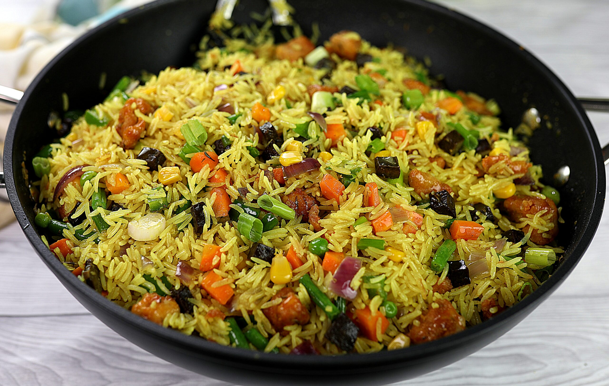

Fried Rice

Description
Ingredients
- Basmati Rice
- Beef Stock
- Shrimp
- Maggi Cubes
- Spring Onion
- Carrots
- Thyme
- Salt
Steps
- Boil rice and add to a medium pot filled with beef stock.
- Cook on medium heat until the water is dried up.
- Fry shrimp to personal liking and cook vegetables with maggi cubes and seasonings.
- Combine rice, shrimp, and vegetables, and continue frying for 3-5 minutes.
- Remove from heat and enjoy!